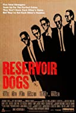
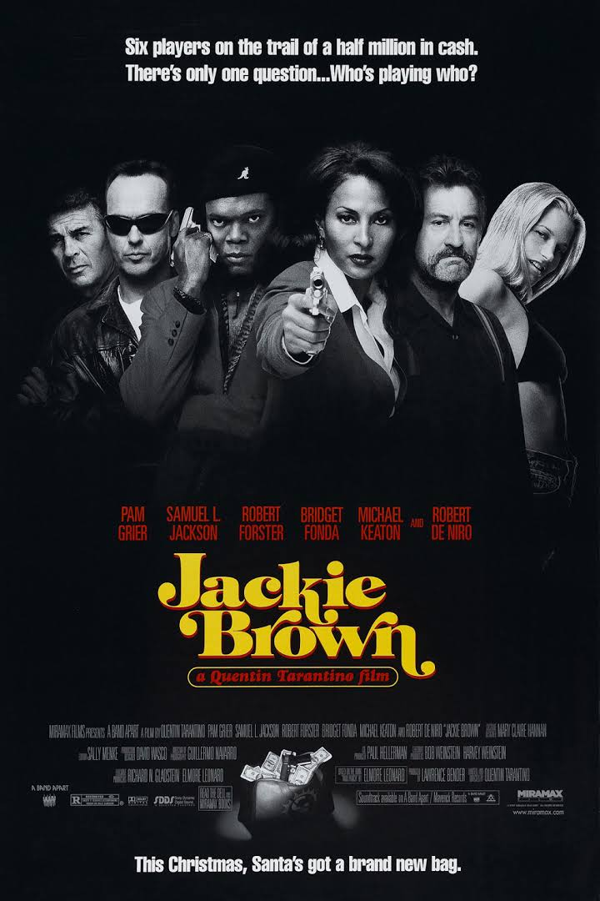
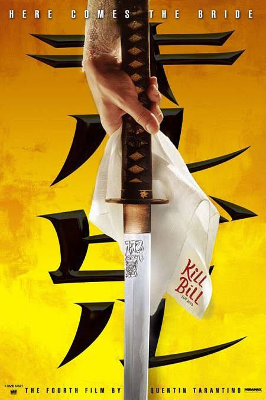
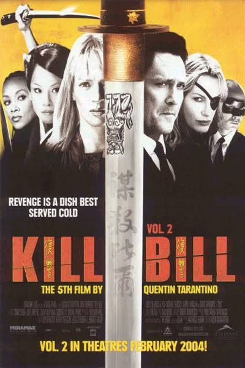
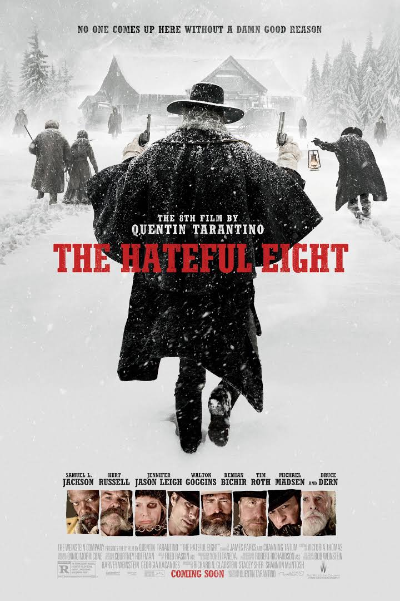

Pulp Fiction (1994)

Clasificación: R
Duración: 2h34m
Género: Crimen, Drama
Fecha de Lanzamiento: 14/10/1994
Sinopsis: Jules y Vincent, dos asesinos a sueldo con no
demasiadas luces, trabajan para el gángster Marsellus Wallace. Vincent
le confiesa a Jules que Marsellus le ha pedido que cuide de Mia, su
atractiva mujer. Jules le recomienda prudencia porque es muy peligroso
sobrepasarse con la novia del jefe. Cuando llega la hora de trabajar,
ambos deben ponerse "manos a la obra". Su misión: recuperar un misterioso
maletín.
Dirigido por: Quentin Tarantino
Escrito por: Quentin Tarantino y Roger Avary
Elenco: John Travolta, Samuel L. Jackson, Uma Thurman,
Bruce Willis, Ving Rhames, Harvey Keitel, Tim Roth, ...
IMDB:
8.9/10
Rotten Tomatoes:
91%
Metacritic:
86%
Recomendados

Reservoir Dogs (1992)

Jackie Brown (1997)

Kill Bill: Volume I (2003)

Kill Bill: Volume II (2004)

American Gangster (2007)

The Hateful Eight (2015)